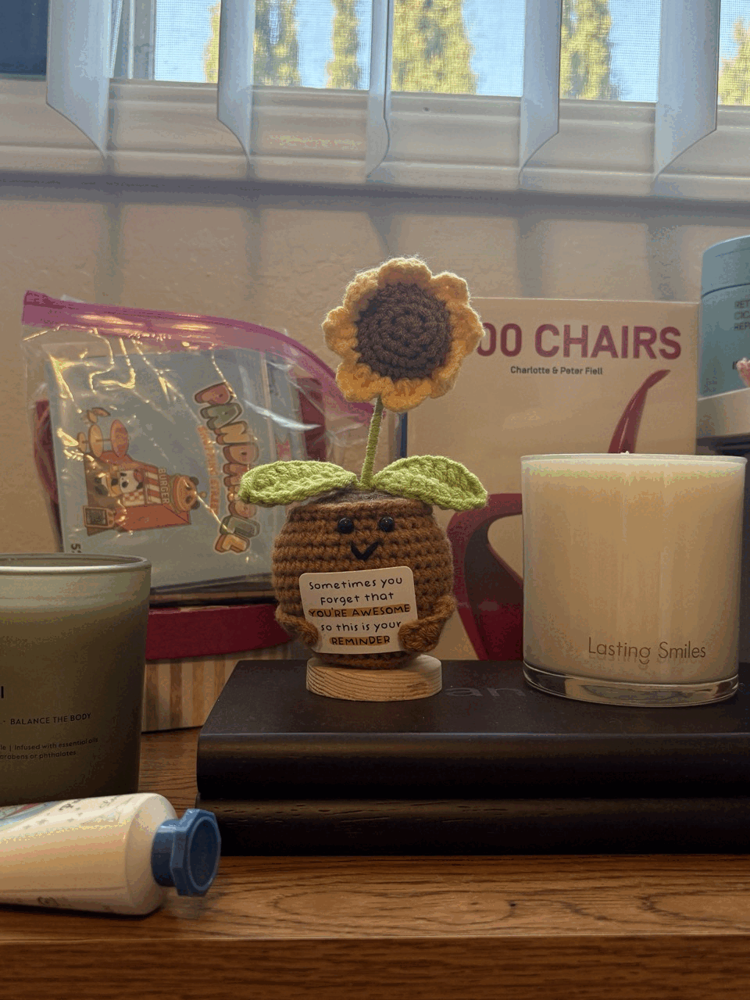

Part 1 — Selfie: Wrong Way vs. Right Way
Close-up vs. stepped-back + zoomed-in.
Part 2 — Architectural Perspective Compression
Zoomed-in view down a street vs. walking forward with no zoom
Part 3 — The Dolly Zoom
Move the camera back while zooming in (or vice versa), keeping the subject size roughly constant.
Animated GIF:
